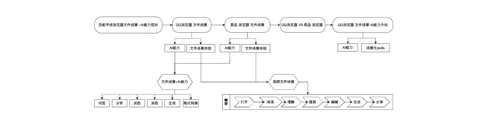
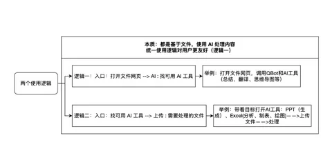
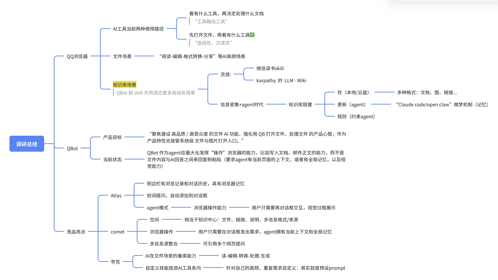

第 1 周 · 5.12-5.15
文件 AI 起步调研
本周先把文件 AI 的用户路径、能力层和体验目标拆清楚，再围绕 QQ 浏览器与竞品完成基础体验记录。
使用 QQ 浏览器
跑通 PC 端文件打开、AI 助手、AI 工具箱和文件任务能力，重点看入口、完成度和闭环。
调研竞品
覆盖夸克、360AI、Edge、Chrome、腾讯文档、Atlas、Comet，记录体验亮点和能力差异。
阅读资料
结合官方文档、产品说明和实际下载体验，把文件场景 AI 能力拆成路径和框架。
讨论学习
与 mentor 和文件工作组对齐：核心不是炫 AI，而是让用户在文件里直接完成任务。
本周工作主线

调研路径围绕“市场现状 → QQ 浏览器自身 → 竞品体验 → 差距判断 → 能力方向”展开。
- 从用户路径看：入口发现、文件打开、AI 理解、AI 处理、结果导出或协作，再到再次使用。
- 从能力层看：AI 阅读、划重点、高频垂类助手、AI 生成、格式转换、协作沉淀和多文件 Agent。
- 从体验目标看：不是“有 AI 按钮”就够了，而是打开文件后能不能直接完成一个具体任务。
QQ 浏览器体验记录

文件 AI 的本质应统一成“基于文件，用 AI 处理内容”。入口可以是打开文件后找 AI，也可以是先找 AI 工具再上传文件，但用户感知上第一套逻辑更自然。
- QQ 浏览器已具备 AI 助手、AI 侧边栏、网页总结、翻译、文档转换和 PPT 生成等基础能力。
- 这些能力与打开文件场景结合还不够深，用户需要先知道“去哪里找”。
- 文件查看器适合承接微信、QQ、本地系统的文件打开入口，但 AI 辅助编辑和局部追问仍有提升空间。
- 更合适的方向是按文件格式组织任务，例如 PDF 速读、Excel 统计、简历优化、票据识别和合同审阅。
